Concentration-QTc modeling example
cqtc.RmdINTRODUCTION
This is a basic tutorial illustrating the use of the cqtc package to conduct exposure-response analyses for the QT interval of the electrocardiogram.
Background
Investigation of the pro-arrhythmic potential of new drugs is an explicit regulatory concern, and the International Council for Harmonisation (ICH) has issued a dedicated guideline, ICH E14, that summarizes the expectations to such investigations.
Typically, a dedicated trial to investigate the effect of the drug on the cardiac repolarization (‘thorough QT/QTc study’) would satisfy these expectations. However, alignment between industry partners and regulatory bodies has been achieved, that a well-designed and conducted QTc assessment based on concentration-QTc modeling (‘c-QTc analysis’) can be in many cases sufficient to exclude clinically relevant QTc effects. This has been summarized in a scientific white paper by Garnett et al., 2017 (https://doi.org/10.1007/s10928-017-9558-5).
The central paradigm of the modeling approach established in this white paper is to use a pre-specified linear mixed-effects model for the change in the QTc interval relative to the pre-treatment baseline value () with fixed effects of intercept (), slope (), influence of baseline QTc on intercept (), treatment (, i.e., active or placebo) and nominal time from first dose (). Random effects are included on the intercept (), slope ():
Indices refer to subject (), treatment (), and time ().
While this pre-specified model is recommended, alternative approaches can be used if the data structure or the relationship between drug concentration and deviate from the assumptions. For this reason, code for the actual linear mixed-effects modeling is not part of this package as it may be subject to specific considerations.
The focus of the cqtc package is to facilitate and standardize the generation of the c-QTc analysis data set, to support consistency checks and exploratory analyses, and to check the model-independent assumptions that underlie the linear mixed-effects modeling approach.
Outline
This example is based on Parkinson, J., Dota, C. & Rekić, D. Practical guide to concentration-QTc modeling: a hands-on tutorial. J Pharmacokinet Pharmacodyn 52, 43 (2025). https://doi.org/10.1007/s10928-025-09981-8
The dofetilide and verapamil data sets used in the above publication are provided as sample data sets as part of this package. The below example makes use of the dofetilide data.
The first part of this tutorial demonstrates how an analysis-ready c-QTc data set for dofetilide is constructed from these data. The second part illustrates how the basic modeling assumptions are checked using exploratory analyses, and the third part focuses on the actual linear mixed-effects modeling.
The tutorial relies on the following R packages:
DATA PREPROCESSING
The structure of the dofetilide data set is:
head(dofetilide_cqtc, 5)
#> ID ACTIVE NTIME CONC QT QTCF DQTCF RR HR
#> 1 1 FALSE -0.5 0 371.0000 391.5099 0.0000000 851.0000 71
#> 2 1 FALSE 0.5 0 381.3333 385.5113 -5.9985922 968.0000 62
#> 3 1 FALSE 1.0 0 368.6667 391.3640 -0.1459669 836.0000 72
#> 4 1 FALSE 1.5 0 368.0000 389.4623 -2.0476373 844.0000 71
#> 5 1 FALSE 2.0 0 377.3333 394.0007 2.4907356 878.6667 68Dedicated thorough QT studies will usually provide data from cross-over treatment with both active and placebo treatments in the same subjects. This allows modeling of the intra-individual difference to placebo treatment, , rather than only. The dofetilide data set includes concentration-QTc data for active and placebo treatments from a parallel group design. The analysis endpoint is , where the placebo group mean for each time points is subtracted from the individual of the active group.
To make the dofetilide data accessible for modeling using the aforementioned pre-specified model, is extended adding the following columns:
- individual baseline QTcF (BL_QTCF):
- the population mean for the baseline QTcF by treatment group (PM_BL_QTCF):
- the difference between the individual baseline QTcF and the respective population mean baseline QTcF:
- the difference between DQTCF and the group mean DQTCF of the control population by time point (DDQTCF):
In addition, the numeric nominal time field (NTIME) is changed to a factor variable:
dof <- dofetilide_cqtc %>%
cqtc_add_baseline("QTCF", baseline_filter = "NTIME == -0.5") |>
add_bl_popmean("BL_QTCF") |>
mutate(DPM_BL_QTCF = BL_QTCF - PM_BL_QTCF) |>
derive_group_delta("DQTCF") |>
mutate(NTIME = as.factor(NTIME)) |>
cqtc()The last line in the above code pipeline converts the input data to a cqtc object. This object is essentially only a wrapper around an ordinary R data frame. However, during the conversion to a cqtc object, some consistency checks are automatically conducted and missing fields added, where possible. In addition printing a cqtc object will automatically show only a summary of the data set:
dof
#> ----- c-QTc data set summary -----
#> Data from 44 subjects
#>
#> QTcF observations per time point:
#> NTIME CONTROL ACTIVE NA
#> -0.5 22 22 NA
#> 0.5 22 22 NA
#> 1 22 22 NA
#> 1.5 22 22 NA
#> 2 22 22 NA
#> 2.5 22 22 NA
#> 3 22 22 NA
#> 3.5 22 22 NA
#> 4 22 22 NA
#> 5 22 22 NA
#> (7 more rows)
#>
#> Columns:
#> ID, ACTIVE, NTIME, CONC, BL, BL_QTCF, PM_BL_QTCF, DPM_BL_QTCF, QT, QTCF,
#> DQTCF, RR, HR, DDQTCF
#>
#> Data (selected columns):
#> ID ACTIVE NTIME CONC QT QTCF DQTCF RR HR
#> 1 FALSE -0.5 0 371 391.5 0 851 71
#> 1 FALSE 0.5 0 381.3 385.5 -6 968 62
#> 1 FALSE 1 0 368.7 391.4 -0.1 836 72
#> 1 FALSE 1.5 0 368 389.5 -2 844 71
#> 1 FALSE 2 0 377.3 394 2.5 878.7 68
#> 1 FALSE 2.5 0 364 390.2 -1.3 811.7 74
#> 1 FALSE 3 0 355 384.4 -7.1 788 76
#> 1 FALSE 3.5 0 360.3 384.7 -6.8 823.3 73
#> 1 FALSE 4 0 355.3 386.2 -5.3 779 77
#> 1 FALSE 5 0 361 391.5 0 784 77
#> 694 more rows
#>
#> Hash: 395095bd5d173cf31a4b94cb4ccbaefbThe underlying data frame can be printed using:
as.data.frame(dof) |>
head()
#> ID ACTIVE NTIME CONC BL BL_QTCF PM_BL_QTCF DPM_BL_QTCF QT QTCF
#> 1 1 FALSE -0.5 0 TRUE 391.5099 395.7591 -4.249215 371.0000 391.5099
#> 2 1 FALSE 0.5 0 FALSE 391.5099 395.7591 -4.249215 381.3333 385.5113
#> 3 1 FALSE 1 0 FALSE 391.5099 395.7591 -4.249215 368.6667 391.3640
#> 4 1 FALSE 1.5 0 FALSE 391.5099 395.7591 -4.249215 368.0000 389.4623
#> 5 1 FALSE 2 0 FALSE 391.5099 395.7591 -4.249215 377.3333 394.0007
#> 6 1 FALSE 2.5 0 FALSE 391.5099 395.7591 -4.249215 364.0000 390.2416
#> DQTCF RR HR DDQTCF
#> 1 0.0000000 851.0000 71 0.000000
#> 2 -5.9985922 968.0000 62 2.279150
#> 3 -0.1459669 836.0000 72 5.279840
#> 4 -2.0476373 844.0000 71 3.367856
#> 5 2.4907356 878.6667 68 4.774198
#> 6 -1.2683179 811.6667 74 2.797502EXPLORATORY DATA ANALYSIS
Drug effect on heart rate
rr_plot(dof, "QT", group = "ACTIVE")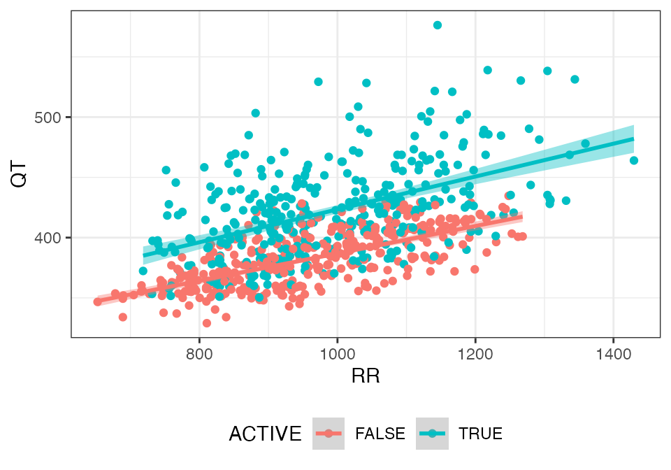
rr_plot(dof, "QTCF", group = "ACTIVE")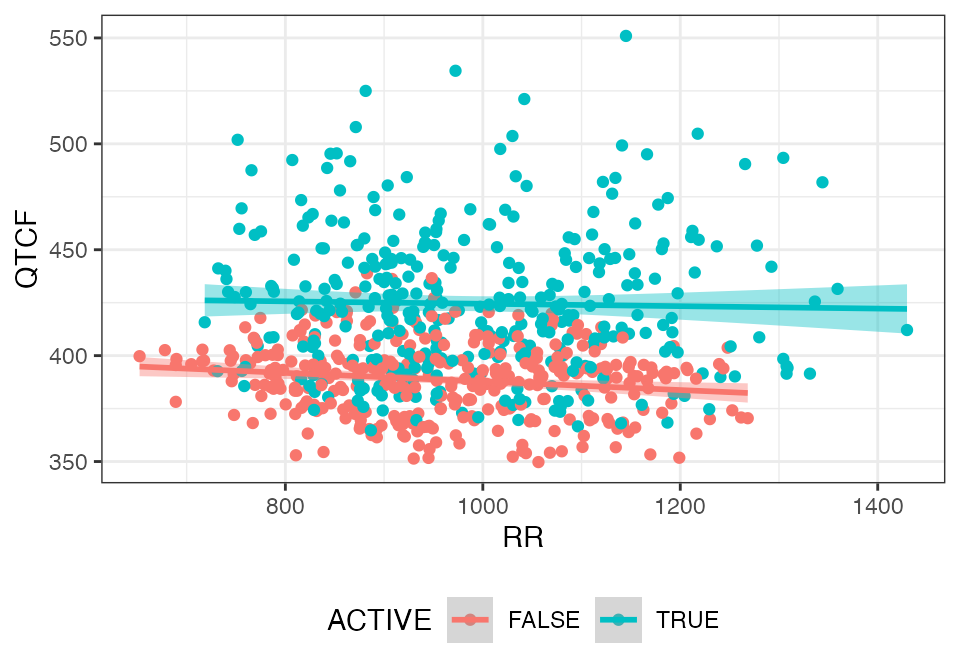
Assessment of hysteresis
cqtc_time_course_plot(dof, "DQTCF")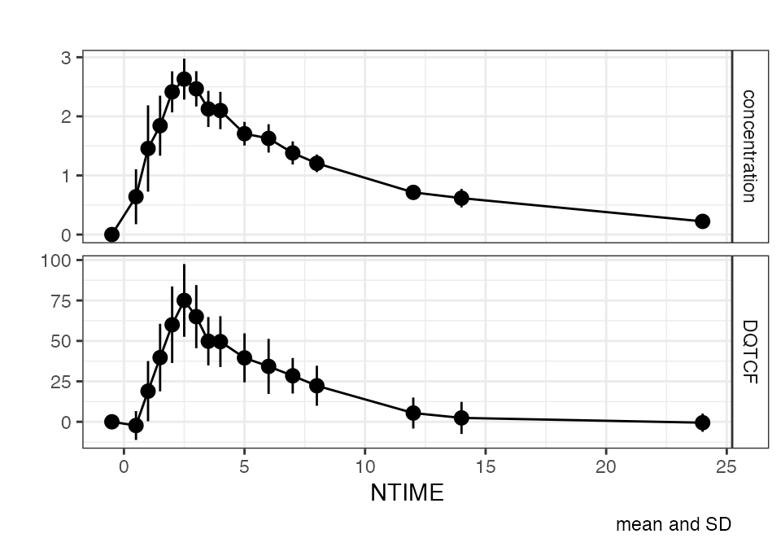
cqtc_hysteresis_plot(dof, "DDQTCF")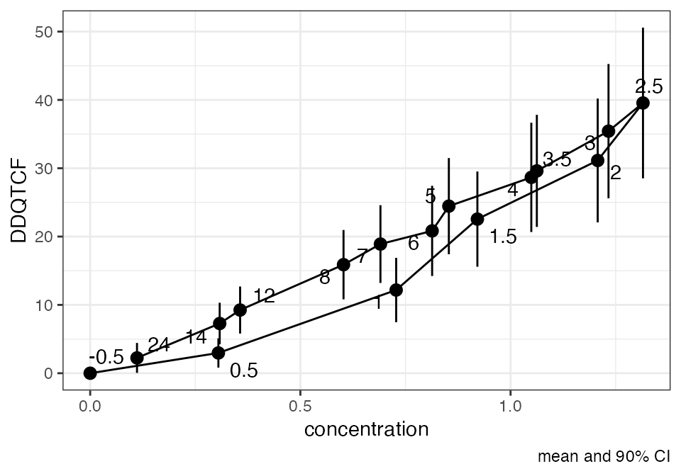
LINEAR MIXED EFFECTS MODELING
Modeling
mod <- lmerTest::lmer(
DQTCF ~ NTIME + ACTIVE + DPM_BL_QTCF + CONC + (CONC||ID),
data = dof)
# parameter estimates
cqtc_model_table(mod) %>%
kable(caption = "Model parameters")| estimate | lci | uci | rse | p | |
|---|---|---|---|---|---|
| (Intercept) | 0.4306187 | -3.2962263 | 4.1574636 | 438.395282 | 0.82 |
| NTIME0.5 | -13.8730718 | -17.7969140 | -9.9492296 | -14.402955 | < 0.001 |
| NTIME1 | -13.4245003 | -17.4376061 | -9.4113944 | -15.222989 | < 0.001 |
| NTIME1.5 | -7.5243725 | -11.6192256 | -3.4295194 | -27.712912 | < 0.001 |
| NTIME2 | -3.0368229 | -7.2969280 | 1.2232821 | -71.435238 | 0.162 |
| NTIME2.5 | 0.4712304 | -3.8611367 | 4.8035975 | 468.170053 | 0.831 |
| NTIME3 | -3.1581633 | -7.4340772 | 1.1177505 | -68.945493 | 0.147 |
| NTIME3.5 | -7.8920967 | -12.0581411 | -3.7260523 | -26.880806 | < 0.001 |
| NTIME4 | -6.8556219 | -11.0126077 | -2.6986361 | -30.877506 | 0.00126 |
| NTIME5 | -7.5582831 | -11.6098136 | -3.5067526 | -27.296448 | < 0.001 |
| NTIME6 | -8.1181883 | -12.1499920 | -4.0863847 | -25.290082 | < 0.001 |
| NTIME7 | -8.6626845 | -12.6402115 | -4.6851575 | -23.381391 | < 0.001 |
| NTIME8 | -9.5300836 | -13.4748652 | -5.5853021 | -21.078317 | < 0.001 |
| NTIME12 | -13.2972069 | -17.1698703 | -9.4245435 | -14.830593 | < 0.001 |
| NTIME14 | -13.0735203 | -16.9367363 | -9.2103043 | -15.047550 | < 0.001 |
| NTIME24 | -5.7817519 | -9.6183265 | -1.9451774 | -33.790366 | 0.0032 |
| ACTIVETRUE | -0.8612373 | -4.9587716 | 3.2362969 | -238.091700 | 0.676 |
| DPM_BL_QTCF | -0.1707644 | -0.2765497 | -0.0649791 | -30.604407 | 0.0023 |
| CONC | 26.7150455 | 23.4834793 | 29.9466116 | 5.916917 | < 0.001 |
# Model plot
cqtc_model_plot(dof, mod, loess = T, refline = c(0, 10, 20))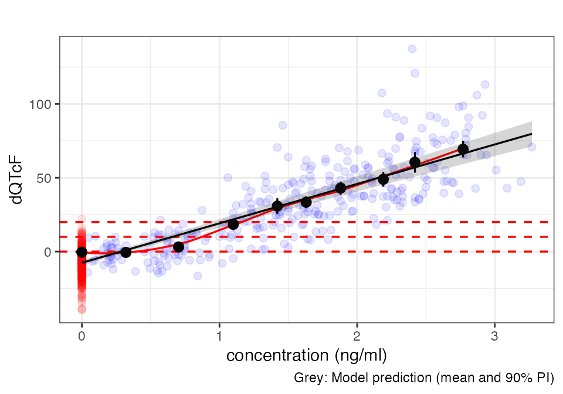
Model diagnostics
invisible(capture.output(
cqtc_gof_plot(mod)
))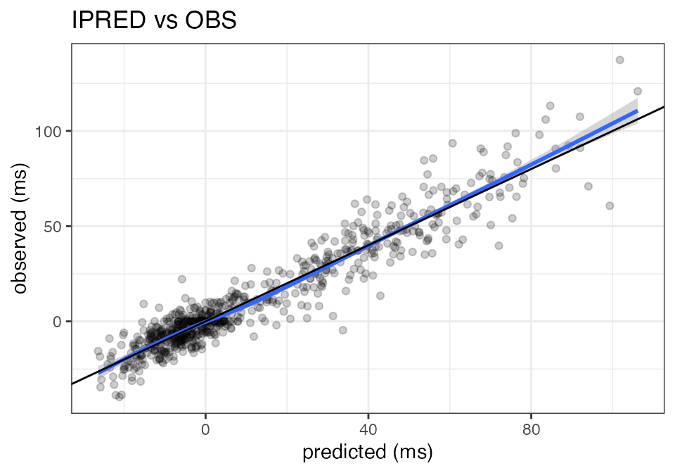
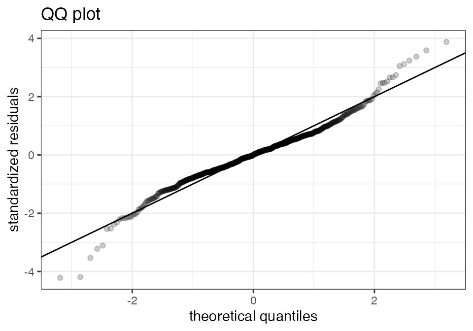
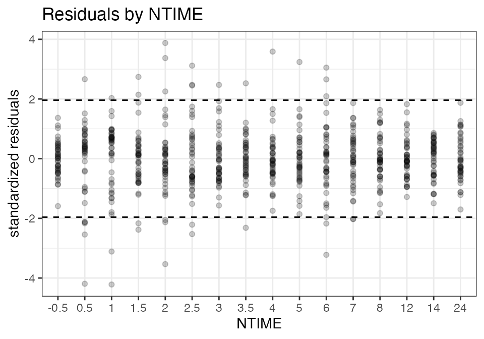
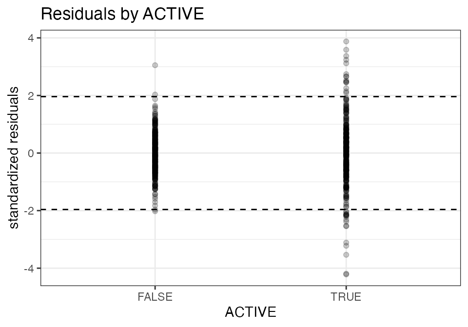
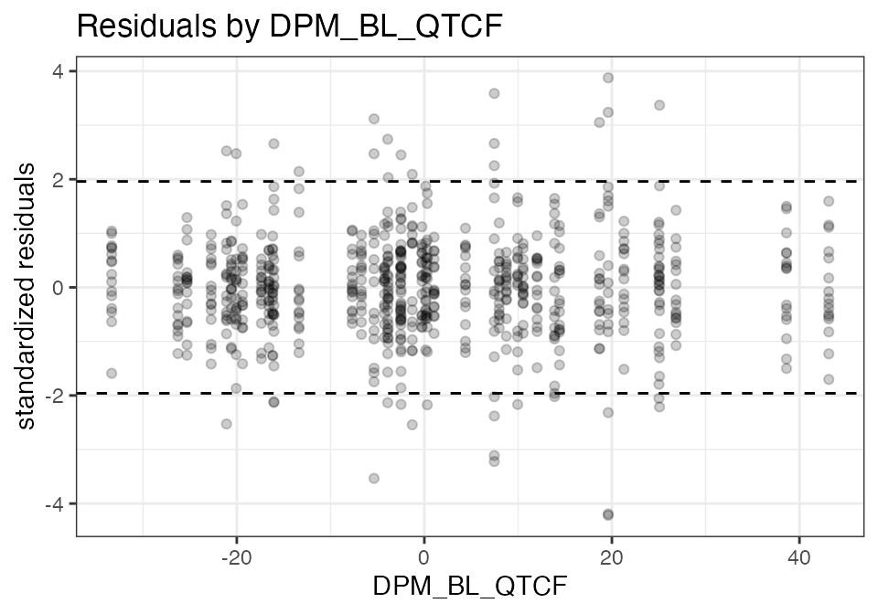
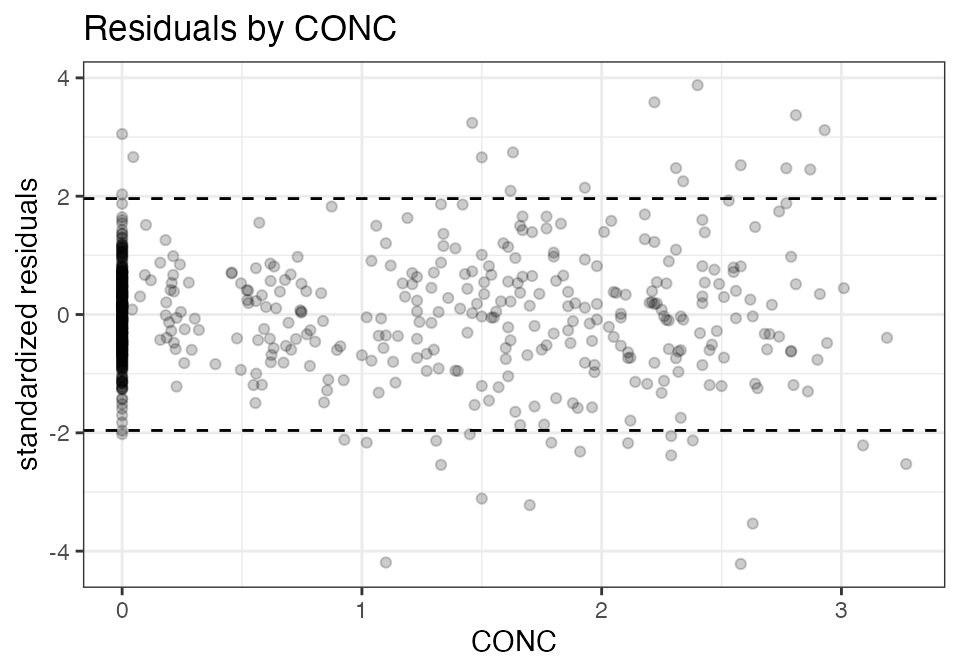
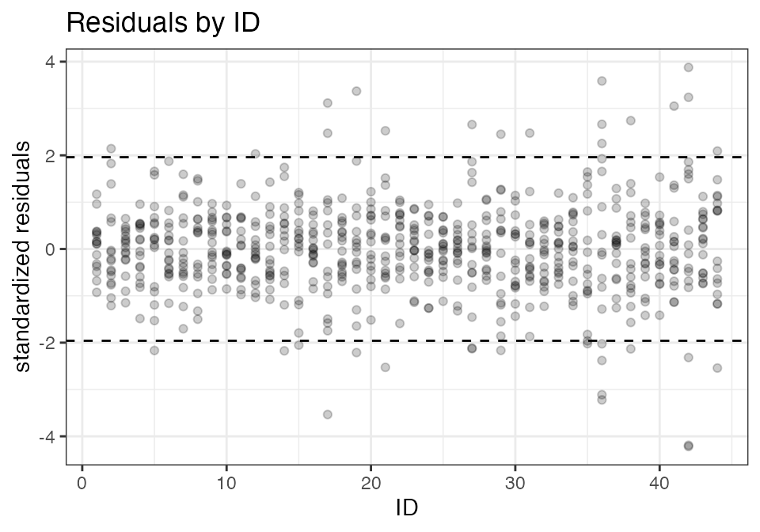